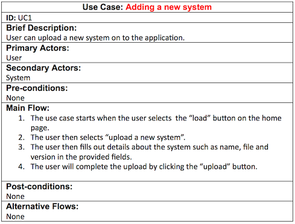

Our Requirements
We gathered the requirements using an iterative approach. We began creating requirements using the minutes collected from our very first meeting. However, these requirements were for multiple projects and our mentors believed that this was not feasible. Hence in the following meeting with our client, we chose one project and was provided with an initial set of requirements by our client. Unfortunately these requirements were difficult to process. This prompted us to develop our own version of the requirements. Then following discussions with our client, we made modifications to the requirements and finalised the MoSCoW rating to develop the following list:
Functional Requirements
| ID | Requirements | MoSCoW rating |
|---|---|---|
| RQ1 | The application must be a data dictionary editor | Must Have |
| RQ2 | The application must be able to create a data dictionary (logical and physical) for the required system e.g. for a customer system or for a payroll system | Must Have |
| RQ3 | The application should be able to load the data dictionary for OpenEyes into the application | Could Have |
| RQ4 | The application should ensure that the data dictionaries can handle the versioning of systems | Should Have |
| RQ5 | The application should ensure that the data dictionary items can be mapped to other items of another system or version | Should Have |
| RQ6 | The application should allow the extraction of data dictionary data | Should Have |
| RQ7 | The application should be able to load data models | Should Have |
| RQ8 | The application should be able to compare data models | Should Have |
| RQ9 | The application could be able to load XML schema data | Could Have |
| RQ10 | The application should allow a data dictionary to be mapped to other data dictionaries | Should Have |
| RQ11 | The application must have a screen for loading data dictionaries | Must Have |
| RQ12 | The application must have a screen that enables the maintenance of a single data dictionary (adding and removal of columns) | Must Have |
| RQ13 | The application must have a screen for loading data | Must Have |
| RQ14 | The application must have a screen that gives access to the default mapping tool | Must Have |
Non-Functional Requirements
| ID | Requirements | MoSCoW rating |
|---|---|---|
| RQ15 | The application must accept systems and data dictionaries as its data (content for the application) | Must Have |
| RQ16 | The application must define a data model for our data dictionary | Must Have |
| RQ17 | The data dictionary should have have the ability to be augmented (can grow in size) | Should Have |
Use-Cases
After developing the requirements, we implemented use case analysis in order to help us understand the system we are designing. The use cases enabled us to generate initial ideas as to how particular functionalites can be achieved. We explored the interaction between the system and the users of the application.
